ML-Yacc uses context-free grammars to specify the syntax of languages to
be parsed. See [2] for definitions and information on context-free
grammars and LR parsing. We briefly review some terminology here. A
context-free grammar is defined by a set of terminals T, a set of
nonterminals NT, a set of productions P, and a start
nonterminal S.
Terminals are interchangeably referred to as tokens. The terminal
and nonterminal sets are assumed to be disjoint. The set of symbols is the
union of the nonterminal and terminal sets. We use lower case
Greek letters to denote a string of symbols. We use upper case
Roman letters near the beginning of the alphabet to denote nonterminals.
Each production gives a
derivation of a string of symbols from a nonterminal, which we will
write as 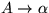. We define a relation between strings of
symbols  and 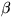, written 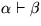 and read
as
and 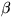, written 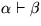 and read
as  derives , if and only if 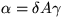,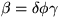 and
there exists some production 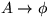. We write the
transitive closure of this relation as
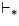. We say that a string of terminals
derives , if and only if 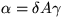,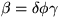 and
there exists some production 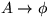. We write the
transitive closure of this relation as
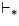. We say that a string of terminals  is a valid sentence
of the language, i.e. it is derivable, if the start symbol
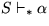. The sequence of derivations is often
visualized as a parse tree.
is a valid sentence
of the language, i.e. it is derivable, if the start symbol
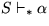. The sequence of derivations is often
visualized as a parse tree.
ML-Yacc uses an attribute grammar scheme with synthesized attributes.
Each symbol in the grammar may have a value (i.e. attribute) associated
with it. Each production has a semantic action associated with it.
A production with a semantic action is called a rule.
Parsers perform bottom-up, left-to-right evaluations of parse trees using semantic
actions to compute values as they do so. Given a production
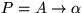, the corresponding semantic action is
used to compute a value for A from the values of the symbols in  .If A has no value, the semantic action is still evaluated but the value is ignored.
Each parse returns the value associated with the start symbol S of the
grammar. A parse returns a nullary value if the start symbol does not carry a value.
.If A has no value, the semantic action is still evaluated but the value is ignored.
Each parse returns the value associated with the start symbol S of the
grammar. A parse returns a nullary value if the start symbol does not carry a value.
The synthesized attribute scheme can be adapted easily to inherited attributes. An inherited attribute is a value which propagates from a nonterminal to the symbols produced by the nonterminal according to some rule. Since functions are values in ML, the semantic actions for the derived symbols can return functions which takes the inherited value as an argument.